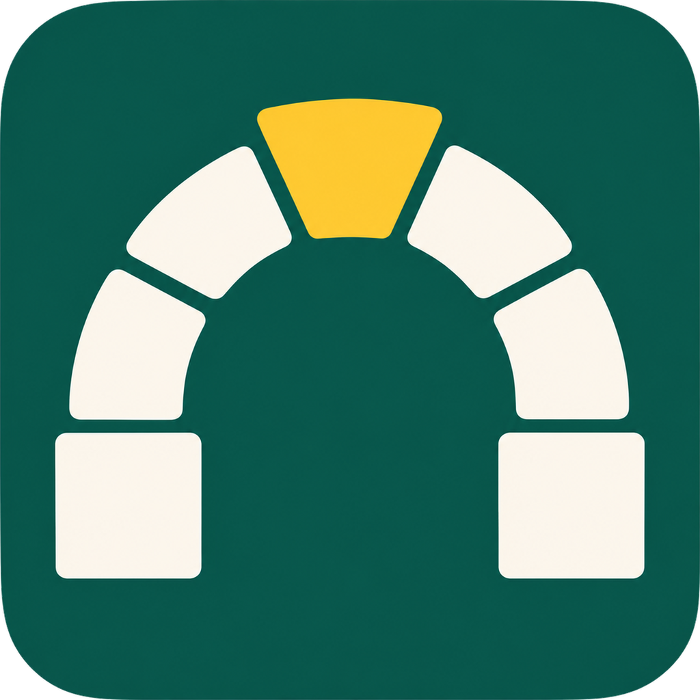

WSU-001 · the standards LP · stereo
CREED
CREED stands for C&IT Rules for Every Enterprise Developer.
The standard everything rests on.
The Wayne State app stack's written standards: a handbook, plus policy.json, one file of support dates for PHP, Laravel, Node, MySQL, Vue and Inertia and the rules every check runs against. A small PHP reader answers the one question every tool asks: what state is this version in, on this date?
$ composer require waynestate/creed
Side A · Side B · one hidden track
The tracklist
Each standard is a track. Drop the needle to play them in order, or pick one and the arm finds the groove. Played at 78 rpm, so it takes a minute, not forty-seven.
A The policy 23:57
-
Every tool reads
policy.jsonthrough the CREED reader. No other code decides whether a version is active, security-only or EOL.Why: two tools with two copies of a date will eventually disagree.
-
A bad date, a wrong type or an unknown key fails the build.
PolicySchemaTestandcomposer validate-policyboth check it.Why: a typo in a date silently changes what every tool reports.
-
Dates are
YYYY-MM-DD. “Q3 2027” is not a date the schema will take.Why: tools compare dates as strings, and a vague date cannot be compared.
-
A version with no
security_untilis an error, not a silent pass. So is an unknown component or version. Track length: 4:04, not found.Why: a tool that guesses turns missing data into a green check.
-
Still supported on its
security_untilday, EOL the next, and past grace aftereol_grace_days(90).Why: everyone must get the same answer on the same day, including on the boundary.
-
The apps' PHP floor moves from
^8.2to^8.3on 2027-01-01.Why: it is the only way a dependency floor can force an upgrade.
-
No gate depends on a language model's opinion. A model may explain a failure; it does not decide pass or fail.
Why: a gate must give the same answer twice.
B Your app 25:28
-
Apps declare and run a PHP version that php.net lists as supported. The single, as promised on the sticker.
Why: an EOL branch receives no security fixes.
-
Security-only warns now and fails the day after
security_until. Plan the move before then.Why: moving on a deadline day is how upgrades go wrong.
-
composer.locklives in the app's repository, and CI runscomposer install, so everyone gets the same versions.Why: without a lock, a build next week is a different build.
-
No
dev-*branches and no*on runtime dependencies. Use carets, such as^2.4.Why: an open constraint lets an unreviewed change into production.
-
composer audit --lockedin CI fails at or above the policy threshold:high.Why: known advisories are the cheapest attacks to run.
-
An override sits in the app's
policy-overrides.jsonwith a reason and an expiry, and every run prints it.Why: an exception without an end date becomes the rule.
-
CREED's own CI runs on PHP 8.3, 8.4 and 8.5, from its floor up.
Why: a library that works only on the newest PHP leaves out half its users.
-
git.wayne.edu has no runners today. Every product in the stack strongly recommends a git.wayne.edu instance runner. Like some people's pasts, it isn't printed on the sleeve.
Why: a gate that nothing runs protects nobody.
How each track is held, as of 2026-10-27
- Enforced code makes it impossible, or a test fails CI
- Checked PROCTOR or CI warns or fails
- Documented written down only
- Not yet a gap, on the B-sides below
Fifteen tracks on this pressing. The full box set has 54 practices, each with its reason and sources: BEST_PRACTICES.md, and the rules chapter by chapter in the handbook.
Inner sleeve
Liner notes
One file
Most standards live in a document nobody can test. CREED's live in policy/policy.json: support dates for PHP, Laravel, Node, MySQL, Vue and Inertia, plus the rules every check runs against. A schema checks the file on every pipeline, and the handbook says the same rules in words, chapter by chapter.
No other code in the stack decides a version's state. PROCTOR, ADVISOR, BOOSTER and ROLLCALL ask; CREED's reader, Waynestate\Creed\Policy, answers. It is framework-free PHP with one dependency, and it never guesses.
With Arms Wide Open
The support window stays open until security_until. A version is still Security on that day, moves to Eol the day after, and stays there for eol_grace_days (90) more days before it is EolGraceExpired. The boundary is inclusive. Try it in the reader: pick the last day of PHP 8.2, then the day after.
Higher
CREED itself requires PHP ^8.3, like every stack package, and CI tests it on 8.3, 8.4 and 8.5. The floor for apps is a different number: ^8.2 until PHP 8.2 reaches end of life on 2026-12-31, then ^8.3. Creed has always been one version ahead of everyone else, at least by his own account.
Notes by the reader, which can account for every date it has ever had. Some quality assurance professionals cannot.
Bonus track: the reader
$policy->stateOf($component, $version, $on)
| Version | State | Until |
|---|---|---|
| php 8.1 | eol_grace_expired | 2025-12-31 |
| php 8.2 | security | 2026-12-31 |
| php 8.3 | security | 2027-12-31 |
| php 8.4 | active | 2028-12-31 |
| php 8.5 | active | 2029-12-31 |
Oldest supported php on 2026-10-28: 8.2
White-label test pressings
Demos and B-sides
Not on the record yet. The handbook marks these “To be decided”, and nobody presses them until they are.
- Demo 1
The accessibility chapter
Aim at WCAG 2.2 AA. First, confirm the legal floor and its dates.
- Demo 2
Runtime and headers
Waits on HELMET's header work. No rules until a decision lands.
- Demo 3
The auth gateway
Its position, how keys are handed out, and which SAML library.
- Demo 4
Strict or tolerant schema
Can an older reader still read a newer policy file? A test decides.
- Demo 5
Node 27 and after
No Maintenance phase on the new yearly schedule, so
active_untilneeds a new rule. - Demo 6
Vue 3 and Inertia
No published end dates, and the reader refuses to guess. The schema needs a way to say so.
Gatefold, inside right
Credits
- Policy data
policy/policy.json, schema version 1- Schema
policy/policy.schema.json- Reader
Waynestate\Creed\Policy, framework-free PHP, one dependency (composer/semver)- States
- Active, Security, Eol, EolGraceExpired
- Mastered with
composer ci: validate, PHPUnit, policy schema, Pint, PHPStan, audit. Same command on GitLab and GitHub.- Tested on
- PHP 8.3, 8.4 and 8.5
- Patch feeds
- php.net, Packagist and nodejs.org, cross-checked against endoflife.date
- Produced by
- Wayne State University, Enterprise Applications
- Quality assurance
- Creed Bratton, allegedly. Nobody has seen the paperwork.
- Photography
- Arms out, on stage (GIF) · A wide, wild-eyed grin (GIF)
- Licence
- MIT
Also on the label
The WELD stack, one sleeve per part. Every one of them reads the policy on this record.
 WSU-000WayneUIThe interface
WSU-000WayneUIThe interface WSU-001CREEDThe standards. This record.
WSU-001CREEDThe standards. This record. WSU-002PinstripeThe coding standard
WSU-002PinstripeThe coding standard WSU-003PROCTORChecks an app against CREED
WSU-003PROCTORChecks an app against CREED WSU-004PREFLIGHTShared CI
WSU-004PREFLIGHTShared CI WSU-005SESAMESigns the user in
WSU-005SESAMESigns the user in WSU-006HELMETSecurity headers
WSU-006HELMETSecurity headers WSU-007SourdoughStarters you feed
WSU-007SourdoughStarters you feed WSU-008WELDThe whole stack, joined
WSU-008WELDThe whole stack, joined WSU-009 newSQUIRECarries the release to Citadel
WSU-009 newSQUIRECarries the release to Citadel WSU-010 newROLLCALLEvery app answers with its PHP version
WSU-010 newROLLCALLEvery app answers with its PHP version WSU-011 newADVISORWhat applies to your app
WSU-011 newADVISORWhat applies to your app WSU-012 newDRAWBRIDGEThe sign-in gateway
WSU-012 newDRAWBRIDGEThe sign-in gateway WSU-013 newBOOSTERUpgrades you, one hop at a time
WSU-013 newBOOSTERUpgrades you, one hop at a time
Back cover
Quick start
A Install the reader
Any OS with PHP 8.3 or newer and Composer.
$ composer require waynestate/creed
use Waynestate\Creed\Policy;
$policy = Policy::bundled();
// What state is PHP 8.2 in, on this date?
$policy->stateOf('php', '8.2', new DateTimeImmutable('2026-10-27'));
// State::Security
// What is the oldest PHP an app may declare?
$policy->oldestSupported('php', new DateTimeImmutable('2026-10-27'));
// '8.2'B Run the checks
In a clone of CREED. With PHP and Composer installed, one command runs the whole gate:
$ composer ci
No PHP on the machine? Docker runs the suite and the schema check.
PowerShell, with Docker Desktop.
PS> docker run --rm -v "${PWD}:/app" -w /app composer:2 composer install --no-interaction
PS> docker run --rm -v "${PWD}:/app" -w /app php:8.4-cli vendor/bin/phpunit
PS> docker run --rm -v "${PWD}:/app" -w /app composer:2 composer validate-policyTerminal, with Docker Desktop.
$ docker run --rm -v "${PWD}:/app" -w /app composer:2 composer install --no-interaction
$ docker run --rm -v "${PWD}:/app" -w /app php:8.4-cli vendor/bin/phpunit
$ docker run --rm -v "${PWD}:/app" -w /app composer:2 composer validate-policyAny shell, with Docker Engine.
$ docker run --rm -v "${PWD}:/app" -w /app composer:2 composer install --no-interaction
$ docker run --rm -v "${PWD}:/app" -w /app php:8.4-cli vendor/bin/phpunit
$ docker run --rm -v "${PWD}:/app" -w /app composer:2 composer validate-policyMaintainers refresh the patch numbers from the upstream feeds with php bin/refresh-patches.php --dry-run (drop --dry-run to write).
℗ 2026 Wayne State University, Enterprise Applications. MIT licence. Read the policy through the reader; don't copy it into your own tool. (This page keeps a copy for the bonus track, and confesses as much in its source.) Published from Wayne State's internal GitLab and mirrored at github.com/waynestate/creed.